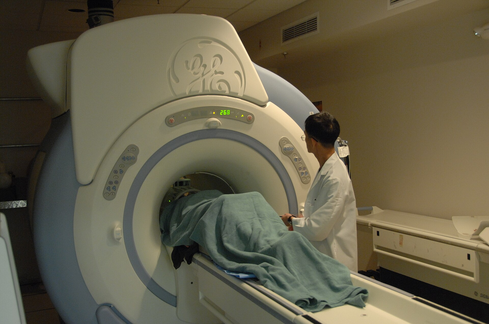
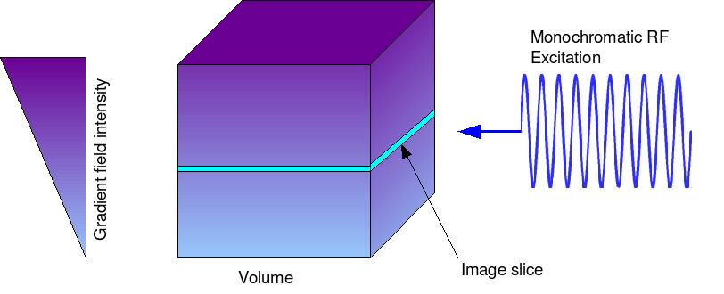
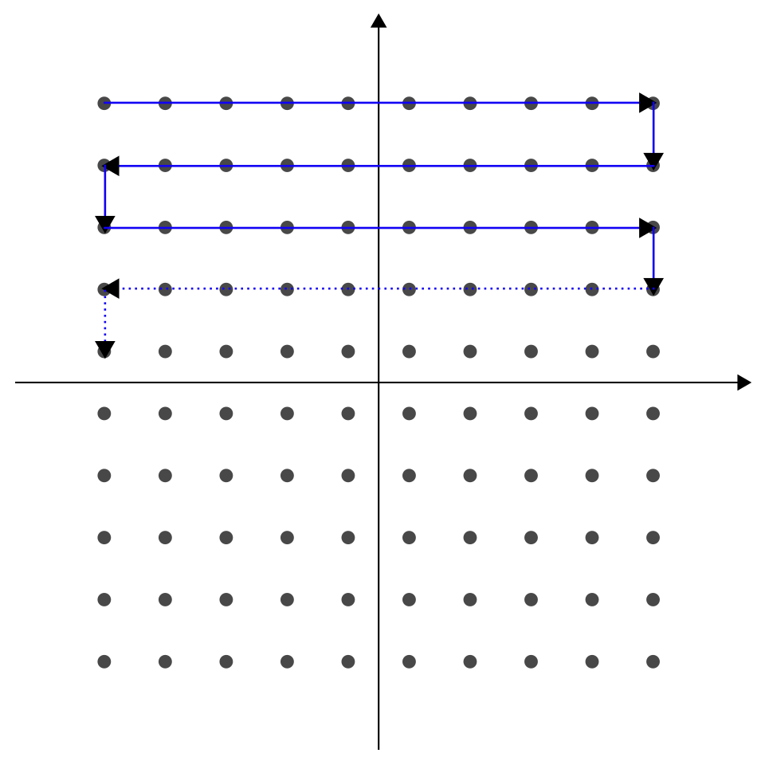

MRI is often described as a technique that uses a strong magnetic field and radiofrequency (RF) signals to produce images of the inside of the body.
But that description leaves out an important question:
Unlike X-ray or CT, MRI does not create an image by sending X-rays through the body. Instead, it detects signals from hydrogen nuclei in the body and uses magnetic fields, RF pulses, and computer processing to determine where those signals came from and what the tissues look like.
Let's follow that process step by step.

MRI Image Formation Starts with Hydrogen
The human body contains a large amount of water, and water contains hydrogen.
Hydrogen is particularly useful in MRI because the nucleus of a hydrogen atom contains a single proton. This proton has a property called spin, which gives it a small magnetic moment.
There are enormous numbers of hydrogen protons throughout the body.
When a person enters the MRI scanner, these protons interact with the scanner's strong magnetic field.
This is where the process of MRI image formation begins.
Step 1 — The Main Magnetic Field
The MRI scanner produces a strong, static magnetic field called B₀.
Before entering the scanner, the hydrogen protons are oriented in many different directions.
Inside the magnetic field, they tend to align with the field. A small excess aligns in the lower-energy direction, producing a net magnetization.
The protons also do something else important: they precess, meaning they behave somewhat like tiny spinning tops that wobble around the direction of the magnetic field.
The rate at which they precess depends on the strength of the magnetic field and is called the Larmor frequency.
This frequency becomes important when the scanner sends the RF pulse.
Step 2 — The MRI Sends an RF Pulse
The scanner then sends a short burst of radiofrequency (RF) energy into the body.
The RF pulse is carefully chosen to interact with the hydrogen protons.
When the protons absorb this energy, their magnetization is disturbed from its original state.
This is called excitation.
Once the RF pulse is turned off, the protons begin moving back toward their original state.
And this is where something important happens:
Step 3 — The Protons Produce a Signal
After the RF pulse stops, the hydrogen protons gradually return toward equilibrium.
During this process, their magnetic behavior produces a small electromagnetic signal.
This signal contains useful information about the tissues being examined.
Different tissues do not behave in exactly the same way.
For example, their hydrogen content and relaxation properties can be different, which affects the signal produced.
This is one of the reasons MRI can show excellent differences between soft tissues.
Step 4 — The MRI Detects the Signal
The signal produced by the body is very small, so the MRI scanner needs a way to detect it.
This is the job of the RF receiver coil.
The coil acts somewhat like a sensitive listener.
It detects the signal produced by the hydrogen protons and sends that information to the MRI system.
But there is still a problem.
The scanner has received signals from the body — but how does it know where those signals came from?
For example, how can it tell whether a particular signal came from the left side or right side of the brain?
This is where gradients come in.
Step 5 — Gradients Tell the Scanner Where the Signal Came From
MRI uses additional magnetic fields called gradient magnetic fields.
Unlike the main magnetic field, gradients can be changed very precisely during the scan.
Their job is to provide location information.
They allow the MRI system to distinguish signals coming from different positions in the body.
Gradients are used for several purposes, including:
- Selecting the slice being imaged
- Encoding position within that slice
- Helping determine where the detected signals originated
This is what allows MRI to turn a collection of signals into a picture of a specific part of the body.
How Does MRI Select a Slice?
Suppose we want an axial image of the brain.
The MRI scanner needs to select a thin section of the brain rather than receiving information from the entire body at once.
A gradient is applied while the RF pulse is being used.
Because the magnetic field changes slightly with position, hydrogen protons at different locations respond differently.
The RF pulse can therefore be used to excite a particular slice.
That slice then produces the signals that the scanner measures.

What Happens to the Information After It Is Detected?
The MRI scanner now has signal information from the selected area.
But the information is not yet a normal-looking image.
The scanner has collected data that contain information about signal strength and location.
During the scan, this information is organized in a data space called k-space.
You do not need to think of k-space as another type of MRI image.
It is better to think of it as a place where the scanner organizes the information it has collected before turning it into the final image.
Once enough data have been collected, the computer processes them and reconstructs the image.

How Does the Computer Make the Image?
The computer takes the collected MRI data and converts it into information about where the signals are located.
A mathematical process called a Fourier transform is used as part of this reconstruction.
You do not need the mathematics to understand the basic idea.
The important point is:
The final result is the MRI image displayed on the screen.
Why Do Different Tissues Look Different?
The MRI signal is not exactly the same in every tissue.
Different tissues have different properties that affect how their hydrogen protons respond to the magnetic field and RF pulse and how they return toward equilibrium.
MRI sequences can be designed to emphasize these differences.
This is where concepts such as T1 and T2 become important.
For example, on typical MRI images:
- CSF is usually dark on T1-weighted images.
- CSF is usually bright on T2-weighted images.
- Fat is commonly bright on T1-weighted images.
- Gray matter and white matter have different relative signal intensities depending on the sequence.
These differences create the contrast that allows us to distinguish one tissue from another.
If you want to understand why the same anatomy can look so different on T1 and T2 images, see “T1 vs T2 MRI — What’s the Difference?”
Why Can MRI Create Different Images of the Same Body Part?
One of the interesting things about MRI is that the scanner can change how tissue characteristics are emphasized.
The same brain, for example, can be imaged using different sequences.
A T1-weighted image may emphasize one set of tissue differences, while a T2-weighted or FLAIR image may show the anatomy differently.
The anatomy has not changed.
This is why an MRI examination usually includes several different sequences rather than just one image.
Putting Everything Together
Let's imagine a simple brain MRI from beginning to end.
First, the patient enters the strong magnetic field.
The hydrogen protons in the body interact with this field.
Next, the scanner sends an RF pulse.
The hydrogen protons absorb some of this energy and their magnetization changes.
Then, the RF pulse stops.
As the protons return toward equilibrium, they produce a detectable signal.
The receiver coil detects that signal.
At the same time, gradient magnetic fields provide information about where the signal came from.
The scanner collects this information as data.
The computer then processes and reconstructs those data into an image.
And finally, we see the MRI image on the screen.
The Whole Process in One Simple Flow
You can remember MRI image formation like this:
In one sentence:
Quick Recap
- Hydrogen provides the main source of the MR signal.
- The main magnetic field organizes the hydrogen protons.
- An RF pulse excites them.
- When the RF pulse stops, the protons produce a detectable MR signal.
- RF coils receive the signal.
- Gradient fields provide information about the signal's location.
- The collected data are organized and processed by the MRI system.
- The computer reconstructs the data into an image.
- Tissue properties and the chosen MRI sequence determine how different tissues appear.
The Key Idea
MRI does not take a picture directly. It measures signals from the body and uses those signals to construct the picture we see.
Sources
-
RadiologyInfo — MRI Safety / How MRI Works
Simple overview of MRI, including the magnetic field, radiofrequency energy, gradients, and image formation.
RadiologyInfo — MRI Safety -
NCBI Bookshelf — Medical Imaging Systems: Principles of MRI
Reference for MRI principles including gradient fields, slice selection, and spatial encoding.
NCBI Bookshelf — Medical Imaging Systems -
NCBI/PMC — Image Reconstruction: An Overview for Clinicians
Reference for MRI image reconstruction and the relationship between acquired data, k-space, and the final image.
PMC — Image Reconstruction: An Overview for Clinicians